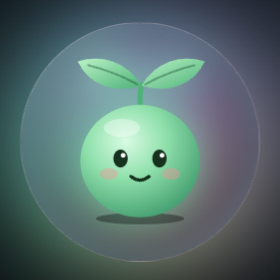
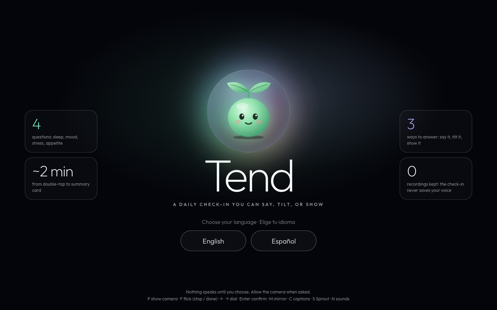
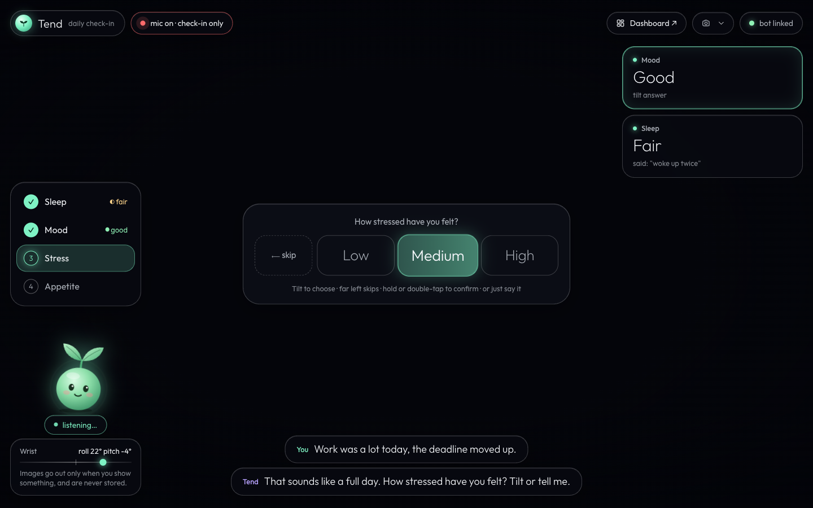
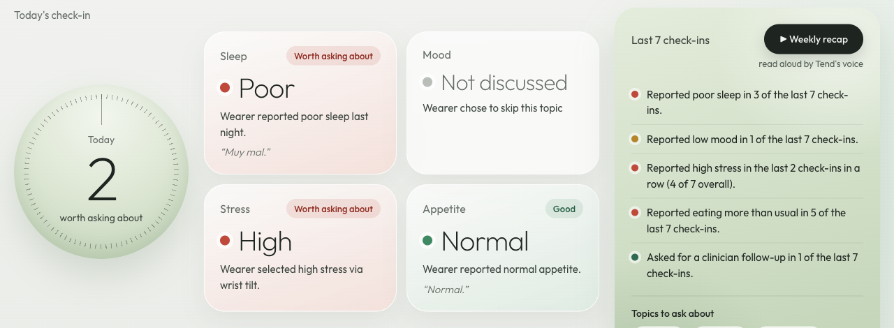
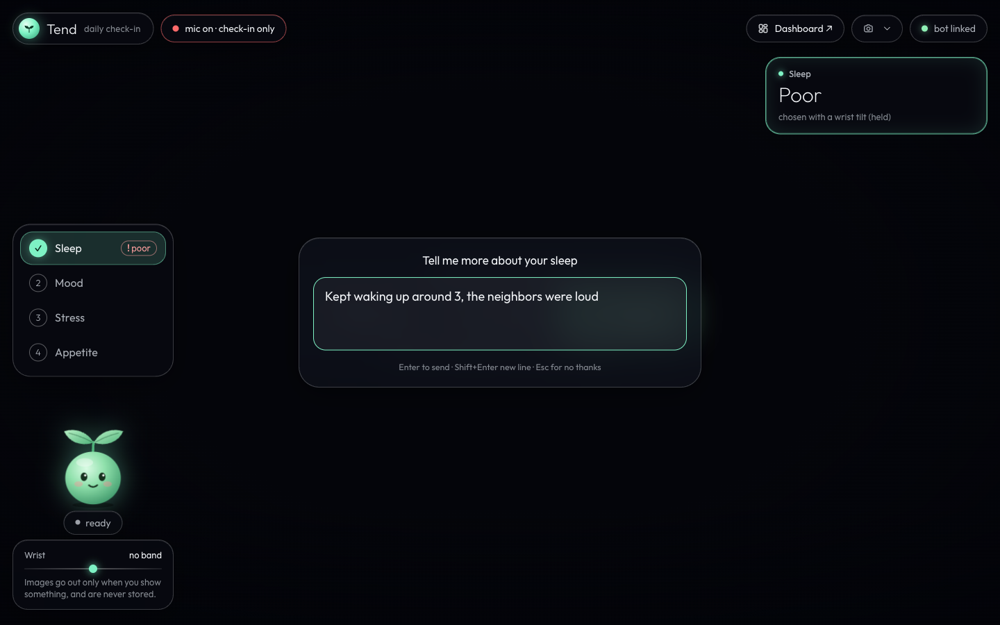
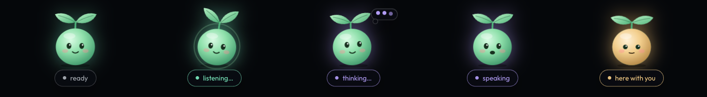
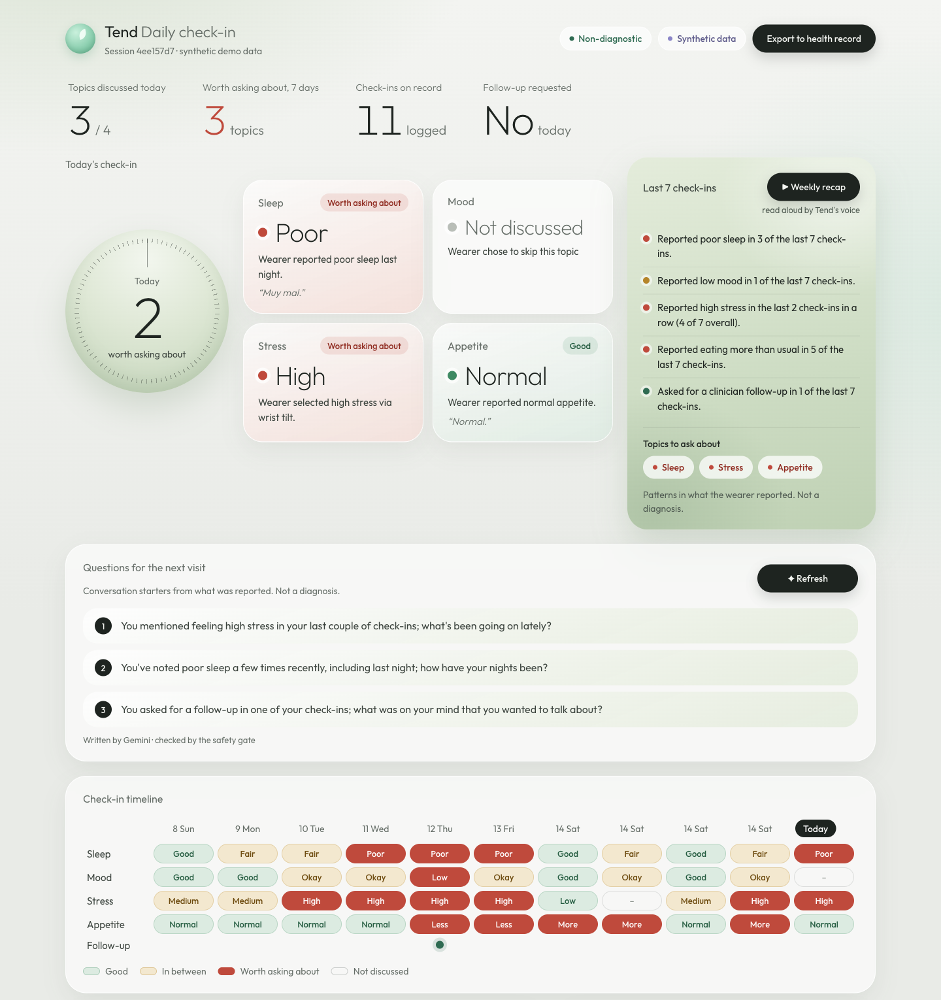

Two minutes a day,
out loud.
Tend is a daily talk on your wrist. Say, tilt or type how your day went; your care team gets a clear, non-diagnostic summary in your own words.
Built in one day at VexoHacks, Vexo × Y Combinator, November 14, 2026.
Life happens between appointments.
Visits are short, and a big part of each one goes to rebuilding the weeks since the last one. How have you been sleeping? Eating? Stressed? You try to sum up three weeks in thirty seconds, and the bad nights, the skipped meals and the hard week are already a blur.
Wearables count steps and heartbeats, but they can't tell anyone how you feel. Questionnaires could, but people stop filling them in. Tend lets the weeks between visits speak for themselves: no screen, no form.
Physicians spend nearly two hours on the health record and desk work for every hour with patients.
How a daily talk goes
-
Double-tap the band
Tend wakes on the Vexo band and speaks through your earbuds. Pick English or Español; mixed Spanglish is understood too.

-
"How was your day?"
Tend listens, then follows up once, the way a friend would. Sprout shows when it's listening, thinking or speaking.
You Work was a lot today, the deadline moved up.
Tend That sounds like a full day. What made it rough?
You Mostly the waiting. I'm okay now.
-
Sleep, mood, stress, appetite
One question at a time. Answer out loud, or tilt your wrist to pick on a dial. Each answer lands on the screen as you give it.

-
Your care team gets the card
A one-glance summary in your own words, added to a 7-day timeline. Tend says goodbye and counts your streak.

Say it, tilt it, or type it.
Tend works for people who don't speak, or don't want to right now.
Say it
Talk the way you would to a friend. A quick wrist flick means "I'm done talking."
Tilt it
Roll your wrist to move the dial, hold to confirm, tilt far left to skip a topic.
Type it
After each tilt answer, Tend offers "Tell me more?" Say it or type it.


For the care team: a card you can read in seconds.
Only what the wearer said, never an interpretation.

In their own words
A level and a short quote for each topic, plus the topics worth asking about.
7-day timeline
Every check-in in one grid, so a hard week stands out before the visit starts.
Questions for the next visit
Gemini drafts two or three conversation starters from what was reported.
Spoken weekly recap
A 30-second summary, read aloud in Tend's voice.
FHIR export
One click sends a standard FHIR R4 record to the health record.
Private and safe by design.
The dashboard shows where the data went: every hop, never the content.
- BandRaw audio, never saved
- Speech to textDeepgram, or on the Mac in private mode
- RedactionNames, phones, addresses, dates removed on the device
- GeminiSees redacted text only
- Safety gateLocal rules check every word
- CardFor the care team
Never a diagnosis
A local safety gate checks every card, recap and visit question for diagnostic language. If wording is blocked, Gemini gets the exact fix list and rewrites it. Plain, auditable rules, not another AI.
When someone is struggling
If the wearer mentions self-harm, Tend responds warmly, mentions the 988 Suicide & Crisis Lifeline, and flags the card for the care team.
Nothing kept that shouldn't be
Raw audio is never written to disk. Camera frames go out only when you show something, and are never stored.
Built with
- PipecatThe whole conversation, with a custom input for the wrist band
- DeepgramNova and Flux speech to text, Aura-2 voice
- Gemini 4 HydrogenThe talk, the card and the visit questions, with self-correcting tool calls
- ElevenLabsEleven v4 Turbo, Tend's voice and the weekly recap
- VexoThe band: mic and motion over Bluetooth